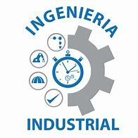

BIENVENIDOS A LA CARRERA DE INGENIERIA INDUSTRIAL
La ingeniería industrial es una rama que se encarga del análisis, interpretación, comprensión, diseño, programación y control de sistemas productivos y logísticos. El ingeniero industrial gestiona e implementar estrategias de optimización para conseguir el rendimiento máximo de los procesos industriales, es decir, la creación de bienes y servicios. El propósito de la ingeniería industrial es el de, mediante una visión integral, optimizar el rendimiento de un sistema dado. La ingeniería industrial se encarga de optimizar los recursos humanos, técnicos e informativos de las empresas, así como el manejo y gestión de los sistemas de transformación de bienes y servicios de estas, con la finalidad de obtener productos y servicios de alta calidad. Los ingenieros industriales pueden ayudar a las organizaciones a operar de manera más eficiente, reduciendo los costos y mejorando la productividad.
LA UNEVERSIDAD TECNICA DE AMABTO ABRE CUPOS PARA LA CARRERA DE INGENIERIA INDUSTRIAL.
La facultad es un sistema avanzado donde tu podras demostarar tu capacidad estudiada en tu colegio. Constan de muchas instalaciones como los laboratorios donde cada uno podra usar una maquina por alumno, aula especializadas con proyectores para facilitar el conocimiento, una area administrativa donde podras pedir con materiales que lo tengas. Estudiar ingeniería industrial brinda beneficios como optimización de procesos, reducción de costos y mejora de la eficiencia. Los ingenieros industriales se enfocan en diseñar, mejorar e implementar sistemas integrados. Esta carrera combina conocimientos de administración, logística, producción y optimización de procesos.
Volver a la página principal